Dhaka Division

Dhaka Division is the administrative, political, and economic heart of Bangladesh. Located in the central part of the country, it is the most densely populated division and home to the capital city, Dhaka. The division plays a vital role in national governance, finance, education, and culture. Major rivers such as the Buriganga, Padma, Jamuna, and Meghna flow through the region, supporting agriculture, trade, and transportation. Dhaka Division is known for its rich history, with notable sites like Lalbagh Fort, Ahsan Manzil, Sonargaon, and Panam Nagar reflecting its Mughal and colonial heritage. The area is also a hub for industries including garments, banking, technology, and commerce. With a blend of ancient history and rapid urban development, Dhaka Division represents both the traditional roots and modern progress of Bangladesh.
| Historical Place | ||
|---|---|---|
| Name | Image | Short History |
| Lalbagh Fort | 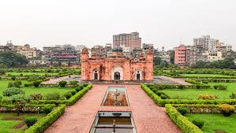 | 17th-century Mughal fort built by Prince Muhammad Azam. |
| Ahsan Manzil |

|
Official residence of Nawabs of Dhaka; now a national museum. |
| National Martyrs’ Memorial | 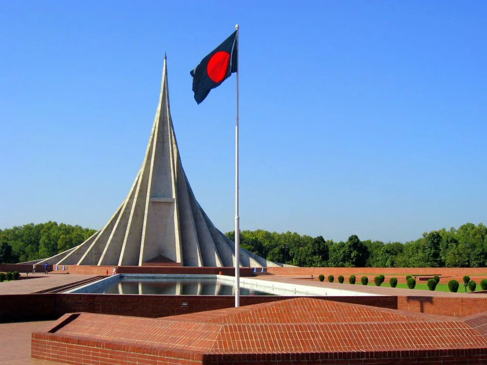 | Honors martyrs of 1971 Liberation War; located in Savar. |
Chattogram Division
Chattogram Division is a major coastal region in southeastern Bangladesh and plays a crucial role in the country’s economy and trade. It is home to Chattogram Port, the largest seaport of Bangladesh, which handles most of the nation’s imports and exports. The division features diverse geography, including hills, forests, rivers, and a long coastline along the Bay of Bengal. Popular attractions such as Cox’s Bazar—the world’s longest natural sea beach—Saint Martin’s Island, Rangamati, and Kaptai Lake highlight its natural beauty. Chattogram Division is also culturally rich, with a mix of Bengali and indigenous communities. Agriculture, fisheries, ship-breaking, and tourism are key economic activities. With its strategic location, natural resources, and scenic landscapes, Chattogram Division is one of the most dynamic and important regions of Bangladesh.
| Historical Place | ||
|---|---|---|
| Name | Image | Short History |
| Foy’s Lake |

|
Popular tourist destination with lake and amusement park. |
| Kathgola Palace | 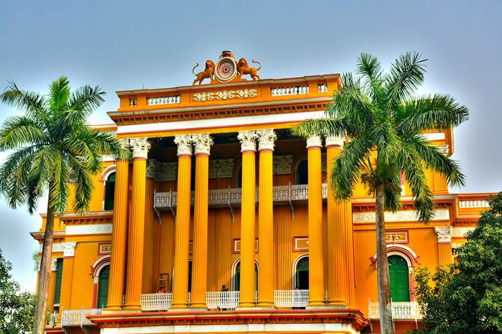 | Historic palace showcasing traditional architecture. |
| Chattogram Court Building |

|
Colonial-era architecture and important legal center. |
Khulna Division

Khulna Division is located in the southwestern part of Bangladesh and is known for its rich natural resources and historical significance. It is home to the Sundarbans, the world’s largest mangrove forest and a UNESCO World Heritage Site, which provides habitat for the Royal Bengal Tiger and many rare species. The division is crossed by major rivers such as the Rupsha, Pasur, and Bhairab, supporting agriculture and fisheries. Khulna Division has an important industrial base, including jute mills, shipyards, and power plants. The region is also known for shrimp farming, which contributes significantly to the national economy. Historical sites like Sixty Dome Mosque (Shat Gombuj Masjid) in Bagerhat reflect its rich heritage. With a blend of nature, industry, and history, Khulna Division holds a vital place in Bangladesh.
| Historical Place | ||
|---|---|---|
| Name | Image | Short History |
| Sundarbans |

|
Largest mangrove forest in the world; UNESCO World Heritage site. |
| Shat Gombuj Mosque |

|
Historic mosque built during the Bengal Sultanate period. |
| Khulna Jame Masjid | 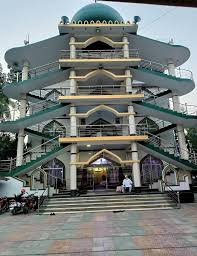 | Important religious and historical site in Khulna. |
Rajshahi Division

Rajshahi Division is located in the northwestern part of Bangladesh and is widely known for its agricultural productivity and historical heritage. The region is often called the “food basket” of the country due to its extensive production of rice, mangoes, sugarcane, and other crops. The Padma River flows along the southern boundary of the division, supporting fertile farmland. Rajshahi Division is rich in history, featuring ancient archaeological sites such as Mahasthangarh, Paharpur Buddhist Vihara (a UNESCO World Heritage Site), and Varendra Research Museum. The division also has a growing education sector, with Rajshahi University being one of the largest public universities in Bangladesh. Known for its relatively dry climate and peaceful environment, Rajshahi Division plays an important role in Bangladesh’s agriculture, education, and cultural history.
| Historical Place | ||
|---|---|---|
| Name | Image | Short History |
| Paharpur Buddhist Monastery |

|
Ancient Buddhist monastery; UNESCO World Heritage site. |
| Varendra Research Museum |

|
Oldest museum in Bangladesh with archaeological collections. |
| Mahasthangarh |

|
Ancient city ruins; one of the earliest urban archaeological sites. |
Barishal Division
Barishal Division is located in the southern part of Bangladesh and is often called the “land of rivers” due to its extensive network of rivers and canals. The division is well known for its fertile agricultural land, producing rice, coconuts, guava, and other crops. Barishal is especially famous for its floating guava markets, which attract visitors from across the country. The region is bordered by the Bay of Bengal and includes many rivers such as the Kirtankhola, Arial Khan, and Meghna, making waterways the main mode of transportation. Barishal Division has a calm and scenic environment, with lush greenery and rich river-based culture. Fishing, agriculture, and small-scale trade are the main economic activities. With its natural beauty and strong connection to rivers, Barishal Division holds a unique place in Bangladesh.
| Historical Place | ||
|---|---|---|
| Name | Image | Short History |
| Durga Sagar | 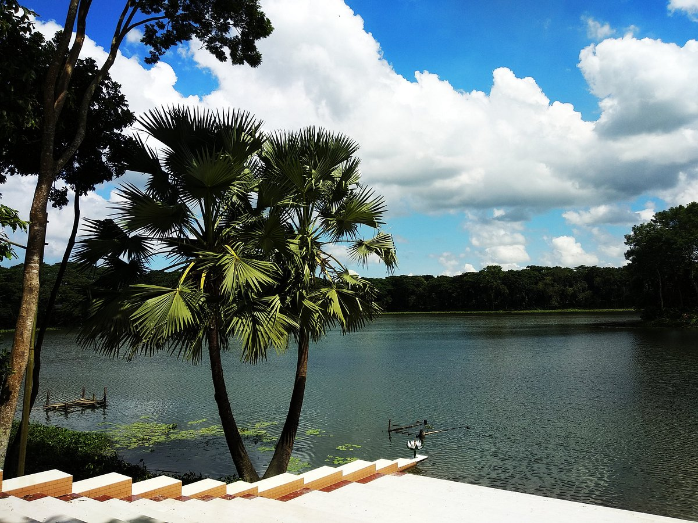 | Largest pond in Barishal; historic landmark. |
| Palashbari Mosque | 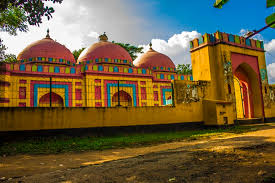 | Historic mosque with traditional Mughal architecture. |
| Kawkhali Zamindar House | 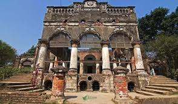 | Colonial-era mansion of the local Zamindars. |
Sylhet Division
Sylhet Division is located in the northeastern part of Bangladesh and is renowned for its natural beauty and cultural heritage. The region is famous for its lush green tea gardens, rolling hills, wetlands known as haors, and scenic rivers. Sylhet is also known as a spiritual center, with important religious sites such as the shrine of Hazrat Shah Jalal (RA) and Hazrat Shah Paran (RA). The Surma and Kushiyara rivers flow through the division, supporting agriculture and daily life. Sylhet Division plays a significant role in the country’s economy through tea production, natural gas, and remittances sent by expatriates living abroad. With its peaceful environment, rich traditions, and breathtaking landscapes, Sylhet Division is one of the most attractive regions of Bangladesh.
| Historical Place | ||
|---|---|---|
| Name | Image | Short History |
| Hazrat Shah Jalal Mazar |

|
Shrine of Hazrat Shah Jalal, the famous Sufi saint of Sylhet. |
| Ratargul Swamp Forest | 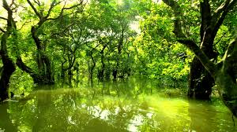 | One of the few freshwater swamp forests in Bangladesh. |
| Jaflong | 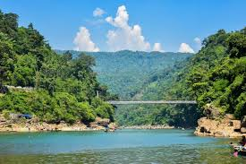 | Scenic tourist spot on the border of Bangladesh and India. |
Rangpur Division

Rangpur Division is located in the northern part of Bangladesh and is known for its agricultural importance and simple rural lifestyle. The region is crossed by major rivers such as the Teesta, Dharla, and Dudhkumar, which support fertile farmland. Rangpur Division is a major producer of rice, potatoes, tobacco, and other crops, contributing significantly to the national food supply. The division has historical importance, with sites like Tajhat Palace and the Carmichael College area reflecting its heritage. Rangpur is also associated with Begum Rokeya, a pioneer of women’s education in Bangladesh. Despite facing seasonal challenges like river erosion and cold winters, Rangpur Division continues to develop in agriculture, education, and infrastructure, playing a vital role in the country’s overall growth.
| Historical Place | ||
|---|---|---|
| Name | Image | Short History |
| Kantajew Temple |

|
18th-century terracotta Hindu temple; famous for intricate designs. |
| Puthia Palace | 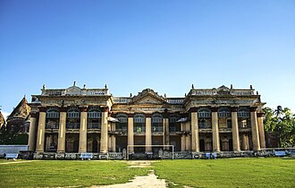 | Historic palace complex with temples and royal architecture. |
| Rangpur Town Hall |

|
Colonial-era administrative building and local landmark. |
Mymensingh Division
Mymensingh Division is located in the north-central part of Bangladesh and is known for its fertile land, rivers, and agricultural prominence. The division is rich in natural resources and is crisscrossed by major rivers such as the Brahmaputra, Meghna, and Jamuna, which support irrigation, fishing, and transportation. Mymensingh is famous for producing rice, jute, vegetables, and dairy products, contributing significantly to the national economy. The region also has a strong educational and cultural presence, with institutions like Mymensingh Medical College and Bangladesh Agricultural University. With its lush green landscapes, riverine beauty, and agricultural productivity, Mymensingh Division represents a blend of nature, tradition, and development in Bangladesh.
| Historical Place | ||
|---|---|---|
| Name | Image | Short History |
| Shoshi Lodge | 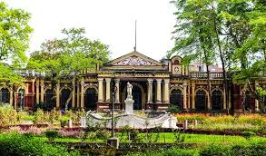 | Historic lodge with architectural and cultural significance. |
| Mymensingh Museum |

|
Local museum showcasing regional history and artifacts. |
| Bhaluka Zamindar House | 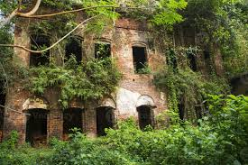 | Historic mansion of local Zamindars, a cultural landmark. |